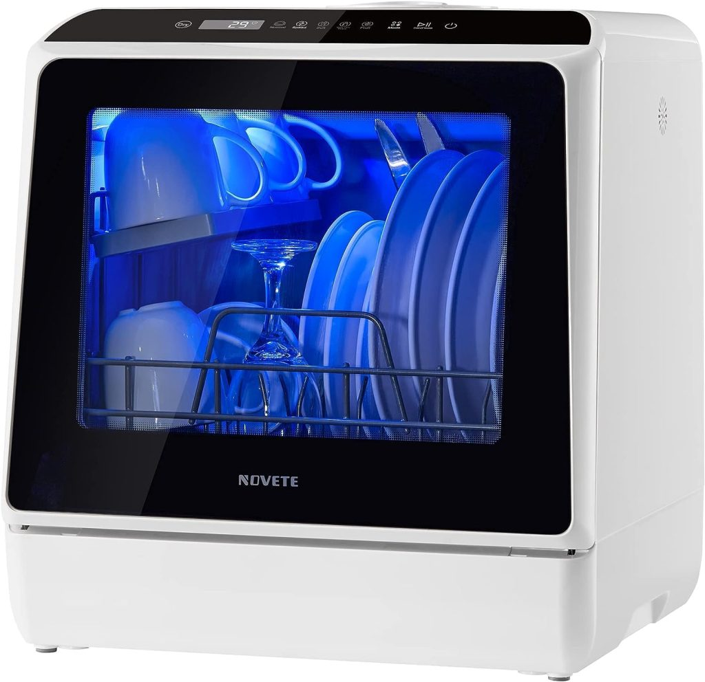
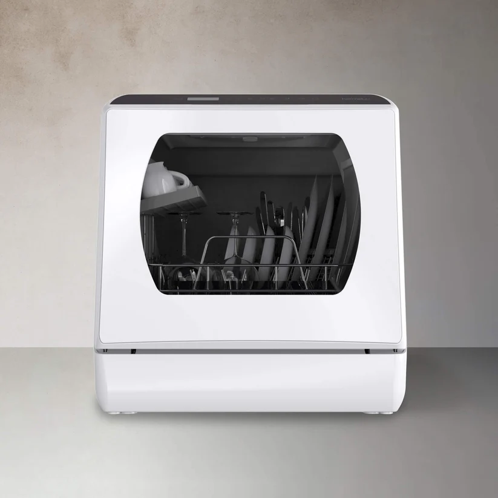
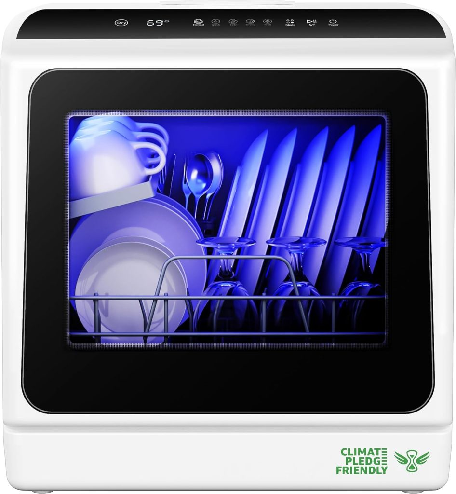
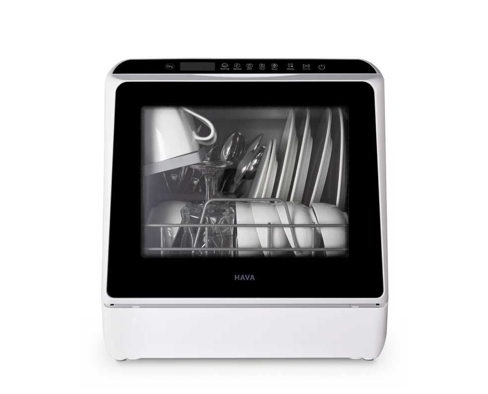
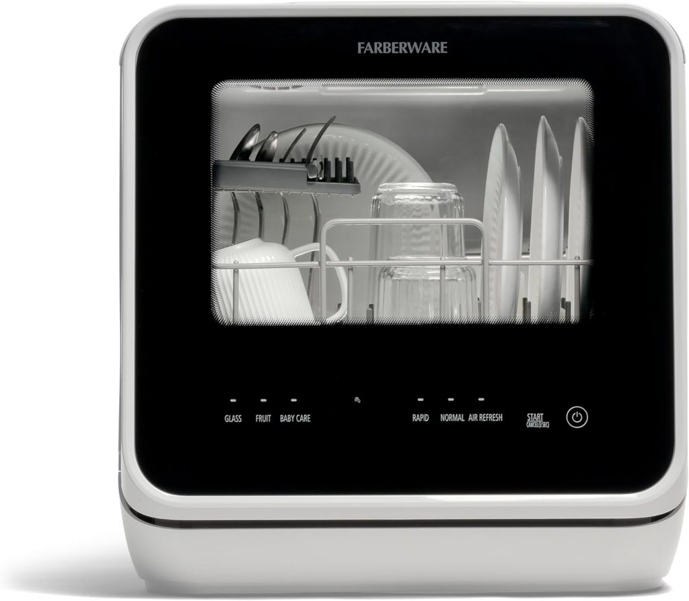
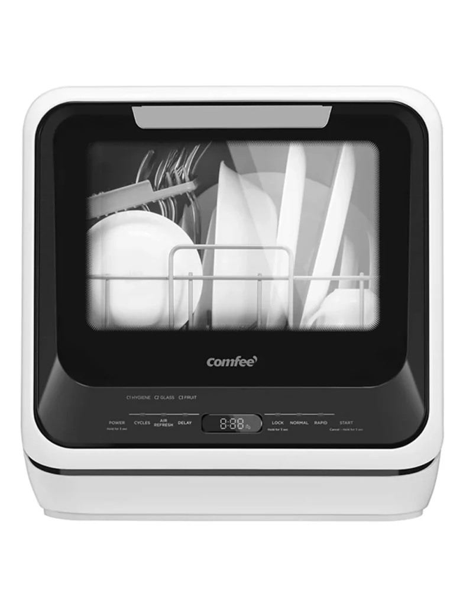

Washing dishes on the road, in an RV galley, at a campsite with power access, or in a short-term rental where the kitchen has no dishwasher — this is one of those daily chores that sounds trivial until you are doing it every single day in a space the size of a closet, with limited hot water, no drying rack, and nowhere to stack wet dishes. A travel friendly dishwasher solves all of that in one compact unit.
The best travel friendly dishwashers in 2026 are purpose-built for exactly this situation. They weigh under 35 pounds, sit on any flat counter, run from a standard 120V outlet, and — in the case of the best models — carry a built-in water tank that means you do not need a sink connection at all. You can place them in an RV, a boat galley, a campervan, a holiday cottage, a dorm room, or a furnished short-term rental and be washing dishes within ten minutes of unboxing.

This guide covers every model worth considering, the features that actually matter for travel use, the ones that can be skipped, and a clear recommendation for every type of traveler from the solo van-lifer to the family RV household.
What Makes a Dishwasher Genuinely Travel Friendly?
Not every compact countertop dishwasher is suitable for travel. A machine that works well as a permanent countertop fixture in an apartment can still be poorly designed for road use. Here is what separates a genuinely travel friendly dishwasher from one that just happens to be small:
Weight and Portability
The practical threshold for a travel dishwasher is under 35 pounds. Above that, moving the unit in and out of a vehicle storage compartment, lifting it onto a counter in an unfamiliar kitchen, or packing it for a trip becomes a two-person job. The lightest models reviewed here come in at 28–30 pounds — light enough for one person to handle comfortably.
Built-In Water Tank
This is the most important feature for travel use. A faucet hookup model requires you to connect to a sink tap every time — which means the machine must live next to the sink, the faucet thread must match the included adapter, and you cannot place the unit anywhere except directly beside a sink.
A built-in water tank model eliminates all of those constraints. You pour water from any source — the kitchen tap, a pitcher, a water jug — into the reservoir, place the machine on any surface with an outlet nearby, and run a full wash cycle. For RV use, van life, boat use, or any temporary accommodation where the faucet thread is unknown or the counter layout is awkward, the water tank is the feature that makes a dishwasher genuinely travel friendly rather than just compact.
Dual Water Supply Mode
The best travel dishwashers offer both options — a built-in tank for true placement flexibility and a faucet hookup for situations where you are parked up at a full hookup site or in an apartment with reliable sink access. This dual-mode flexibility means one machine covers every scenario without compromise.
Compact Footprint
For travel purposes, the footprint matters more than the height. A machine that is 17–18 inches wide fits on a galley counter, an RV slide-out surface, a small kitchen counter in a rental, or a boat nav station table without crowding out everything else. The widest models at 21+ inches start to feel large in a mobile living context.
Noise Level
In a small RV or campervan, a loud dishwasher runs in the same space where you sleep, work, or relax. Anything above 60 dB is noticeable in a confined vehicle interior. The quietest models reviewed here run at 40–52 dB — genuinely unobtrusive even in small enclosed spaces.
Quick Comparison — Best Travel Friendly Dishwashers in 2026
| Model | Weight | Tank | Width | Programs | Noise | Best For | Price |
|---|---|---|---|---|---|---|---|
| NOVETE TDQR01 | 28 lbs | 5L | 16.9" | 5 | ~52 dB | Lightest, solo travel | ~$279 |
| Hermitlux Countertop | 30 lbs | 5L | 16.85" | 5–7 | 52–55 dB | Budget travel pick | ~$296 |
| Euhomy Countertop | ~33 lbs | 5L | 16.83" | 6–8 | 40 dB | Quietest for van/RV | ~$250 |
| HAVA R09 | 31.5 lbs | 5L | ~16.85" | 7–8 | 60 dB | Hard water travel | ~$320 |
| Farberware FDW05ASBWHA | ~30 lbs | 5L | ~17" | 5 | ~52 dB | Solo travelers on budget | ~$249 |
| COMFEE' Portable Mini | ~38 lbs | 5L | 21.6" | 6 | ~50 dB | Couples, family RV | ~$299 |
In-Depth Reviews — Best Travel Friendly Dishwashers
1. NOVETE TDQR01 — Best Overall Travel Friendly Dishwasher

The NOVETE TDQR01 is the closest thing to a purpose-designed travel dishwasher currently on the market. At 28 pounds it is the lightest full-function countertop dishwasher reviewed here, it measures just 16.9 x 16.8 x 18.1 inches, and it includes every accessory you need in the box — a tableware basket, storage rack, cutlery basket, inlet hose, drain hose, fruit basket, and a water-filling pitcher. You genuinely do not need to buy anything else.
The built-in 5L water tank supports instant use from any location with an outlet. The dual-mode design also allows faucet connection when you are at a full hookup site. Five wash programs (Heavy, Normal, Speed at 29 minutes, Glass, and Baby Care/Fruit mode) cover every realistic travel scenario. The LED touch panel and transparent glass door allow you to monitor the cycle without opening the machine — a small but genuinely useful feature when you are cooking in the same space. The automatic water level indicator takes the guesswork out of filling the tank.
The NOVETE holds 4 full place settings and fits dishes up to 12 inches loaded at an angle — a larger plate capacity than most models of similar width. For a solo traveler or a couple who generates one realistic load of dishes per day, this covers everything from breakfast bowls and mugs to dinner plates, cups, and a full set of cutlery.
Specs at a Glance
| Spec | Detail |
|---|---|
| Weight | 28 lbs |
| Dimensions | 16.9" W x 16.8" D x 18.1" H |
| Water Tank | 5L built-in |
| Water Supply | Tank mode or faucet mode |
| Wash Programs | 5 |
| Max Plate Size | 12" at angle |
| Place Settings | 4 |
| Drying | Air dry with ventilation |
| Power | 950W |
| Approximate Price | ~$279 |
Pros and Cons
| Pros | Cons |
|---|---|
| Lightest full-function model at 28 lbs | Air dry only — no heated drying |
| Full accessory kit included in box | 5 programs (fewer than Euhomy 8-program) |
| Transparent glass door with LED interior | |
| Dual water supply — tank and faucet | |
| 29-minute Speed cycle for quick turnarounds | |
| Compact enough for any galley or counter |
Best For: Solo travelers, van-lifers, and couples who want the most portable full-function dishwasher available and value low weight above all else.
2. Hermitlux Countertop Dishwasher — Best Budget Travel Dishwasher

For travelers who want the lowest possible spend without sacrificing genuine performance, the Hermitlux delivers solid daily results at a price that does not hurt. At 30 pounds it is only marginally heavier than the NOVETE, and the 16.85-inch width keeps the footprint within travel-friendly dimensions.
The 5L built-in water tank and 5–7 wash programs (depending on variant) handle everyday dish loads reliably. The glass viewing door on select models is a useful addition for monitoring without opening. Noise at 52–55 dB is acceptable in most travel settings. The combination of the lowest price on this list and one of the lowest weight figures makes the Hermitlux the clear pick for budget-conscious travelers — full-time RVers on a tight budget, students taking a dishwasher to a dorm, or anyone who wants the convenience of a travel dishwasher without a significant upfront investment.
Specs at a Glance
| Spec | Detail |
|---|---|
| Weight | 30 lbs |
| Dimensions | 16.85" W x 16.73" D x 18.23" H |
| Water Tank | 5L built-in |
| Wash Programs | 5–7 |
| Noise Level | 52–55 dB |
| Drying | Air dry |
| Approximate Price | ~$296 |
Pros and Cons
| Pros | Cons |
|---|---|
| Lowest price on this list | Smaller capacity than COMFEE' |
| 30 lbs — easy single-person handling | No heated drying option |
| Glass door on select variants | Cycle programs vary by variant |
| Compact footprint for tight galleys |
Best For: Budget travelers, full-time RVers watching spend, and students who want a reliable travel dishwasher for the lowest possible outlay.
3. Euhomy Countertop Dishwasher — Best for Van Life and Quiet RV Use

If you live in a campervan, sleep in an RV, or spend significant time working from your vehicle, the noise level of every appliance matters more than it does in a house. The Euhomy runs at 40 dB — the quietest of any model on this list by a meaningful margin, and quieter than most refrigerators. You can run it while on a work call, while someone else sleeps in the same vehicle, or late at night without it being disruptive.
Beyond the noise advantage, the Euhomy's 167°F Baby Care and Heavy cycle provides genuine high-temperature sanitization — important for travelers who cook meat-based meals regularly and want dishes that are hygienically clean rather than just visually clean. The 60-minute hot air drying followed by 73 hours of automatic ventilation means dishes come out genuinely dry rather than damp, which matters in the humid interior of a vehicle or boat.
At 16.83 inches wide and around 33 pounds, it fits on any galley surface. The standard 6-program variant handles everyday travel loads. The upgraded 8-program model adds Self-Clean mode, Child Lock, and a Delay function — allowing you to set the machine to run while you are away from the vehicle and return to clean dishes. ETL and DOE certification confirms the electrical safety and energy efficiency standards.
Specs at a Glance
| Spec | Detail |
|---|---|
| Weight | ~33 lbs |
| Dimensions | 16.83" W x 16.73" D x 18.03" H |
| Water Tank | 5L built-in |
| Wash Programs | 6 (standard) / 8 (upgraded) |
| Max Temp | 167°F |
| Noise Level | 40 dB |
| Drying | Hot air 60 min + 73hr ventilation |
| Certifications | ETL and DOE certified |
| Approximate Price | ~$250 |
Pros and Cons
| Pros | Cons |
|---|---|
| 40 dB — quietest on this list | Slightly heavier than NOVETE at 33 lbs |
| 167°F sanitizing cycle | 8-program variant costs slightly more |
| 73-hour post-wash ventilation | |
| Dual water supply — tank and faucet | |
| Delay mode on 8-program variant | |
| Best value overall for daily travel use |
Best For: Van-lifers, full-time RVers, boat dwellers, and anyone who needs the quietest possible operation in a confined living space and wants genuine heated drying.
4. HAVA R09 — Best Travel Dishwasher for Hard Water Areas

Hard water is a significant problem for appliances in certain regions of the USA and across much of Europe and Australia. Limescale builds up inside the machine over months of use, reduces cleaning effectiveness, leaves white residue on dishes, and ultimately shortens the machine's lifespan. For travelers who move between regions and cannot predict water hardness, the HAVA R09's integrated water softener addresses this at the machine level — the only travel-format dishwasher reviewed here to include one.
The R09 also carries the 18-hour delayed start — the longest available on any model in this category — which is genuinely practical for travelers who want to load dishes, set the machine, and return to clean dishes later without standing by. At 31.5 pounds and 7–8 wash programs including a 167°F sanitizing cycle and PTC hot air drying, it is a feature-rich machine in a compact body. The Class D energy rating at 0.35 kWh per cycle makes it the most energy-efficient model reviewed here — meaningful for travelers running on solar, battery banks, or a limited campsite power supply.
Specs at a Glance
| Spec | Detail |
|---|---|
| Weight | 31.5 lbs |
| Dimensions | ~16.85" W x 16.75" D x 18" H |
| Water Tank | 5L built-in |
| Wash Programs | 7–8 |
| Max Temp | 167°F |
| Noise Level | 60 dB |
| Drying | PTC hot air |
| Energy | 0.35 kWh / cycle |
| Delayed Start | Up to 18 hours |
| Water Softener | Yes — built-in |
| Approximate Price | ~$320 |
Pros and Cons
| Pros | Cons |
|---|---|
| Built-in water softener — unique in this category | Highest price on this list |
| 0.35 kWh — lowest energy draw, ideal for solar/battery | 60 dB — louder than Euhomy |
| 18-hour delayed start | |
| PTC hot air drying | |
| Available in multiple colors |
Best For: Travelers who move through hard water regions, off-grid users running on solar or battery power where energy draw matters, and travelers who want to set-and-forget rather than be present for every wash cycle.
5. Farberware FDW05ASBWHA — Best Budget Solo Travel Dishwasher

The Farberware is one of the most commonly purchased first-time travel dishwashers for good reason: it is genuinely capable, genuinely compact, and comes in at under $250 — the lowest price point on this list for a water tank model. The 5L built-in tank covers one full cycle and the dual-mode faucet hookup covers situations with sink access. Five wash programs include Normal, Rapid, Glass, Fruit Wash, and Baby Care — a well-chosen set for solo travel where variety in what you wash cycle-to-cycle is limited.
The standout feature is the plate capacity: the Farberware accommodates dishes up to 12 inches in diameter when loaded at an angle, which is larger than many competitors and means a standard dinner plate fits without issue. The air-exchange drying system speeds up the drying process without heated elements, which keeps the energy draw low.
For a solo traveler who wants the lowest possible price for a reliable travel dishwasher with a water tank, the Farberware is the straightforward recommendation.
Specs at a Glance
| Spec | Detail |
|---|---|
| Water Tank | 5L built-in |
| Wash Programs | 5 |
| Max Plate Size | 12" at angle |
| Drying | Air exchange system |
| Dual Water Supply | Yes — tank and faucet |
| Approximate Price | ~$249 |
Pros and Cons
| Pros | Cons |
|---|---|
| Lowest price for a dual-mode water tank model | Lighter spec than Euhomy or HAVA |
| 12" plate capacity — generous for the size | Air dry only |
| Simple 5-program operation | |
| Compact for travel |
Best For: Budget-conscious solo travelers buying their first travel dishwasher who want the most straightforward, reliable option at the lowest price.
6. COMFEE' Portable Mini Dishwasher — Best for Couples and Family RV Travel

For couples or small families traveling together in an RV, campervan, or on a boat, the daily dish load quickly outgrows the 4-place-setting capacity of the smaller models. The COMFEE' Portable Mini holds 6 place settings or up to 70 individual pieces of tableware — more than any other water tank model reviewed here — and the 360-degree dual spray arms cover every corner of that larger load thoroughly.
At 162°F the sanitizing cycle provides genuine hygiene for shared travel living. The 50 dBA noise level is acceptable in most RV and travel settings. The trade-off is the larger footprint: at 21.6 inches wide, the COMFEE' requires meaningful counter space that a van or small boat may not offer. In a larger Class A or Class C RV with a full kitchen slide, it sits comfortably. In a Class B van conversion or a small boat galley, the NOVETE or Euhomy's narrower profile is a better fit.
Specs at a Glance
| Spec | Detail |
|---|---|
| Weight | ~38 lbs |
| Dimensions | 21.6" W x 19.7" D x 17.2" H |
| Water Tank | 5L built-in |
| Wash Programs | 6 |
| Place Settings | 6 |
| Max Temp | 162°F |
| Noise Level | ~50 dBA |
| Drying | Air dry |
| Approximate Price | ~$299 |
Pros and Cons
| Pros | Cons |
|---|---|
| 6 place settings — largest capacity on this list | Widest footprint at 21.6" |
| 360-degree dual spray arms | Heaviest at ~38 lbs |
| 162°F sanitizing cycle | Not ideal for compact van/boat galleys |
| Well-established reliability and user reviews |
Best For: Couples and small families in larger RVs or travel accommodation who generate enough dishes to need 6-place-setting capacity per day.
What to Think About Before Buying a Travel Friendly Dishwasher?
Power Requirements on the Road
All six models reviewed here run on standard 120V power — the same supply available at US campground hookup sites, in most RVs, on shore power at marinas, and from a standard household outlet. Power draw ranges from 850–1,000W during the wash cycle, which is manageable even on a 15A circuit. If you are running off a battery bank or solar system without shore power, the HAVA R09's 0.35 kWh per cycle is the most efficient choice.
For travel scenarios where you are generating your own power, pairing your dishwasher with a quality portable generator gives you full-cycle capability anywhere. See our complete guide to the Best Portable and Inverter Generators for Clean, Quiet Power for recommendations on generators sized for small appliance loads like these.
Drain Setup in a Travel Context
All water tank models drain via an included drain hose. In a travel setting, you route this hose into the nearest sink, a drain bucket, or your RV's waste drain. The hose is typically 39–47 inches long — enough to reach most sinks from a countertop position. If you are draining into a bucket rather than a sink, a standard 2-gallon bucket handles one complete drain cycle comfortably.
What Detergent to Use in a Travel Dishwasher
Standard dishwasher pods (Finish, Cascade, or store-brand equivalents) work in all models reviewed here, but compact travel machines benefit from pods more than powder — a pod provides a precisely dosed amount of detergent every cycle without measuring, which is a practical convenience when traveling. Adding rinse aid to the dispenser compartment noticeably improves drying results across all air-dry models. Both products are widely available across the USA and are easy to pack in small quantities for extended travel.
Pairing Your Travel Dishwasher with a Portable Washing Machine
If you are setting up a full mobile laundry and kitchen solution — whether for an extended road trip, a long RV season, or full-time van life — a portable dishwasher and a portable washing machine are a natural pairing. Both run on standard 120V power, both connect to a water source and drain to a bucket or sink, and both solve the same fundamental problem of doing domestic chores in a space without permanent appliances. Our guide to the Best Portable Washing Machines for Apartment Living covers the laundry side of that setup in full detail.
Travel Dishwasher vs Hand Washing — Is It Actually Worth It on the Road?
This is a fair question for travelers who are used to hand washing dishes and have never thought about a portable dishwasher as a travel option. Here is the honest comparison:
| Factor | Hand Washing (Travel) | Travel Dishwasher |
|---|---|---|
| Water per day's dishes | 8–15 gallons | ~1.3 gallons (5L) |
| Time per day | 15–25 minutes | 2–3 minutes loading + unloading |
| Hot water dependency | High — runs out fast in RVs | None — built-in heating element |
| Hygiene (max temp) | Tap temperature (~110°F) | 162–167°F sanitizing cycle |
| Drying space needed | Significant — towels, racks | None — dries in the machine |
| Daily effort | Active, every meal | Load, press button, unload |
The water saving is the figure that surprises most people. An RV fresh water tank holds 30–100 gallons depending on the vehicle. Hand washing dishes can consume a significant portion of that daily capacity. Running a 5L dishwasher cycle uses 1.3 gallons — a fraction of what even careful hand washing requires. For boondocking (dry camping without water hookups), a travel dishwasher with a built-in tank actively extends how long you can stay off-grid between water fills.
The time saving compounds over a long trip. Fifteen to twenty minutes of active dish washing every day is over two hours per week — time that, on a travel trip, you would typically spend on something better.
How to Set Up and Use a Travel Dishwasher Anywhere?
Step 1 — Choose Your Surface
Place the unit on any flat, stable surface near a 120V outlet. In an RV, this is typically the kitchen counter or the dining slide when extended. On a boat, the nav table or a purpose-cleared galley counter works well. The drain hose needs to reach a sink, drain hole, or bucket — route it before you fill the tank.
Step 2 — Fill the Tank
Use the included pitcher to fill from any water source. Warm water from a tap produces better first-cycle results than cold water because it activates detergent faster. Fill to the indicator line — typically marked clearly on the tank or visible through the door.
Step 3 — Load Correctly
Scrape food debris off dishes before loading — travel dishwashers have small filters that clog faster than full-size machines. Cups and glasses face down. Taller items go on the outer edges where they do not block the spray arm rotation. Cutlery goes handle-down in the basket.
Step 4 — Add Detergent and Run
Place one dishwasher pod in the detergent compartment, select your cycle, and press start. A Normal cycle runs 60–90 minutes. Speed cycles on the NOVETE, Euhomy, and HAVA run in 29 minutes — practical when you need a quick turnaround between meals.
Step 5 — Maintain the Filter
Remove and rinse the filter every 2–4 weeks under running water. In a travel context where you are moving between water sources and potentially washing dishes that have been used outdoors, filter cleaning is more important than in a static home use context. A clean filter is the single biggest factor in long-term machine performance.
If you are also managing other portable cleaning equipment for your travels, see our guide to the Best Portable Cleaning Machines for a complete picture of what is worth carrying.
Building Your Complete Travel Kitchen
A travel dishwasher is one part of a broader travel kitchen setup that genuinely changes the quality of life on a long trip. The other components that complement it most directly are a portable cooking solution and a portable water and ice supply.
For cooking on the road without a full kitchen, our Best Portable Stoves and Microwaves for Cooking on the Go guide covers every option from compact induction plates to microwave alternatives. For keeping drinks cold and ice available during travel, see our Portable Water and Ice Solutions guide. And for a comprehensive overview of the full range of portable appliances worth considering for any travel setup, the Best Portable Kitchen Appliances Guide covers the whole picture.
For the full overview of portable laundry and dishwashing solutions together, see our Ultimate Guide to Portable Laundry and Dishwashing Appliances for Small Spaces.
Frequently Asked Questions
What is the best travel friendly dishwasher in 2026?
For solo travelers and van-lifers, the NOVETE TDQR01 at 28 pounds is the best combination of light weight, full function, and reasonable price. For travelers who prioritize noise level above everything else, the Euhomy at 40 dB is the clear choice. For couples or families needing 6-place-setting capacity, the COMFEE' handles the larger load. For hard water regions or off-grid solar users, the HAVA R09's water softener and 0.35 kWh efficiency make it the specialist pick.
Can I use a countertop dishwasher in an RV?
Yes — all six models reviewed here are regularly used in RVs. The key considerations for RV use are counter space (measure before ordering), drain hose reach, and whether you have shore power or are running from a battery/solar system. The 5L water tank models do not need a sink connection at all, which makes placement far more flexible in an RV kitchen where the counter and sink positions are fixed.
Do travel dishwashers actually clean well?
Yes. The high-temperature cycles (162–167°F) on the models reviewed here significantly exceed what tap water hand washing achieves (~110°F), and the pressurized spray arms provide more consistent coverage than manual scrubbing. The main limitation is load size — 4–6 place settings per cycle — rather than cleaning quality.
How much water does a travel dishwasher use per cycle?
All water tank models reviewed here use 5 liters (1.3 gallons) per cycle. This is substantially less than hand washing, which typically uses 8–15 gallons for the same load depending on technique. For off-grid travelers managing a fixed fresh water supply, a travel dishwasher meaningfully extends between-fill intervals.
Can I use a travel dishwasher on a boat?
Yes, with some considerations. You need a stable 120V outlet (shore power, an inverter, or an onboard generator). Drain routing needs to lead to a sink or a bucket — not overboard. The compact footprint of the NOVETE, Euhomy, or Hermitlux (all under 17 inches wide) works well on most boat galleys. Securing the unit against movement while underway is important — position it where it cannot slide, or use non-slip matting underneath.
What is the lightest dishwasher for travel?
The NOVETE TDQR01 at 28 pounds is the lightest full-function countertop dishwasher currently available. The Hermitlux at 30 pounds and the HAVA R09 at 31.5 pounds are close behind. All three are within practical single-person handling range for travel use.
Do I need a special detergent for a travel dishwasher?
No — standard dishwasher pods work in all models reviewed here. Pods are the most practical choice for travel because they eliminate measuring. Avoid gel detergents if possible as they can leave residue in compact machines. Rinse aid improves drying results, particularly in air-dry-only models.
Final Verdict — Best Travel Friendly Dishwasher for Every Traveler
| Your Travel Situation | Best Pick |
|---|---|
| Solo van life, lightest possible unit | NOVETE TDQR01 |
| Quietest for confined vehicle use | Euhomy Countertop |
| Hard water regions or off-grid solar | HAVA R09 |
| Budget-first solo traveler | Farberware FDW05ASBWHA |
| Budget, lightest combination | Hermitlux |
| Couples or family RV with larger counter | COMFEE' Portable Mini |
Every model on this list is a genuine step up from hand washing in a travel context — not just in the time and effort saved, but in water conservation, hygiene, and the day-to-day quality of life on a long trip. The right choice depends on your vehicle size, your typical load, your water source, and how much noise tolerance you have in your living space.
For a deeper look at the full range of countertop and portable dishwasher options beyond the travel category, see our complete guide to the Best Portable and Countertop Dishwashers.